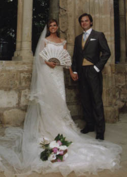

Jesús Covaleda González-Zapatero & Diana Martín Jiménez
Jesús Covaleda González-Zapatero & Diana Martín Jiménez  Jesús Covaleda González-Zapatero & Diana Martín Jiménez
Jesús Covaleda González-Zapatero & Diana Martín Jiménez 
This page is within a frameset. View the entire genealogy report of family Jesús Covaleda González-Zapatero & Diana Martín Jiménez, or surname index or report summary.
Genogram Templates.
© 2006 GenoPro Inc. All Rights Reserved.